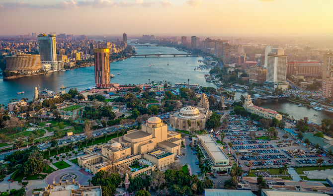

EGYPT

Grand Egyptian Museum: While there’s no official opening date yet, the eagerly awaited (and long-delayed) Grand Egyptian Museum is rumored to be opening in November 2022, and it couldn’t come soon enough. Once open, this state-of-the-art complex based outside of Cairo will be the largest archaeological museum in the world, with over 100,000 artifacts on display, including treasures from King Tutankhamun’s tomb.
Grand Avenue of the Sphinxes: A 3,000-year-old ancient road in Luxor known as the Grand Avenue of the Sphinxes officially reopened at the end of November 2021 with an epic grand procession after an extensive period of excavation. The 1.7-mile-long road is lined with around 700 sphinxes and connects Karnak Temple to Luxor Temple. As one of the world’s largest ancient sites, this long-awaited reopening has already led to influx of interest in the area.
Egyptologists and history buffs will know that 2022 is the 100th anniversary of the opening of Tutankhamun’s tomb, which occurred in November, 1922 by British archaeologist Howard Carter. This will be celebrated by special tours, such as those led by the Egypt Exploration Society.
Based on Agatha Christie’s famous mystery novel of the same name, Death on the Nile is a new film by Kenneth Branagh slated to premiere in theatres on February 11, 2022 after many delays. While the movie was not shot in Egypt, it is possible to have a Nile-inspired boat trip aboard the new Viking Aton. Owned and operated by Viking, Viking Aton is specifically designed to sail the Nile.
For those looking to stay on dry land, there’s always the famed Four Seasons: Based on the shores of the Red Sea, the Four Seasons Resort Sharm El Sheikh, Egypt is about to get even better with a major expansion. Scheduled to be completed in early 2022, the new and improved property will feature 22 additional hectares (doubling the size of the original property); new meeting space; an all-new fitness facility; and a full-service on-site PADI center. There is also talk of a new Chedi hotel by GHM, The Chedi El Gouna, opening in the Red Sea area.
